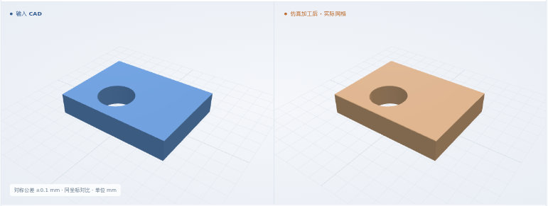
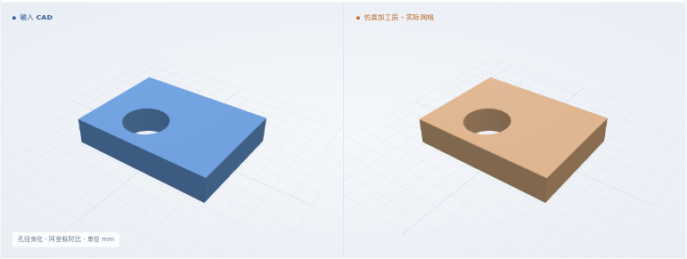
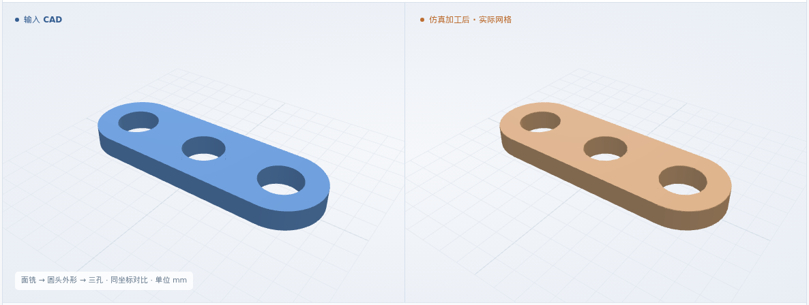
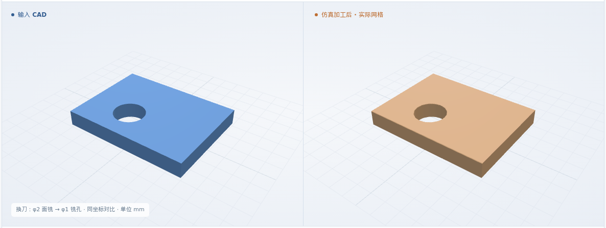
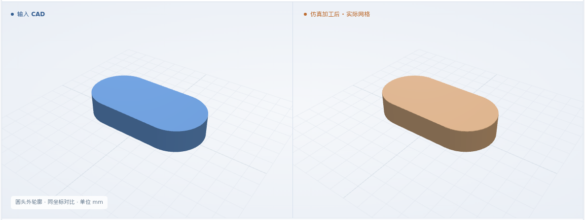
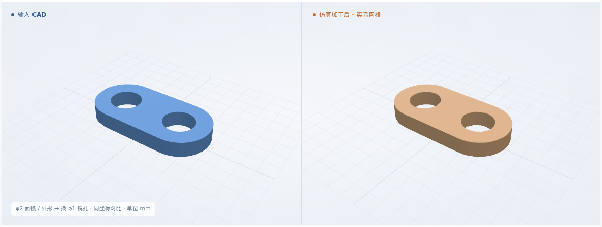
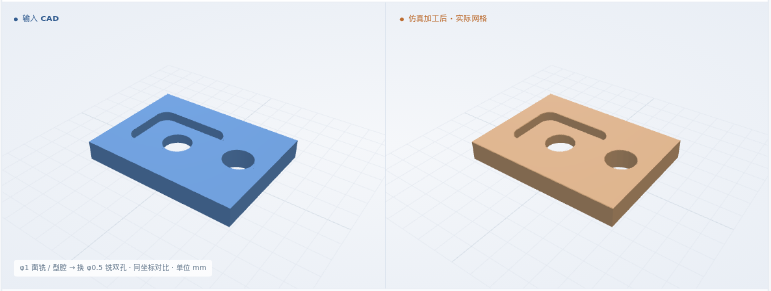

夹爪避让
通过净空通过 → 完成去料
IoU 99.8532%
全部结果均为软件仿真，未做真实切削。真实工艺卡整卡通过 0 份。工艺卡和判据多为开发方编写，未经工艺师傅批准。开发进度 →
一坯多件全量接触检查已取消。没有最终 IoU，整卡未通过。见开发需求 REQ-09。
新增输入接入和检查方法，复用已有零件；不新增设备或材料支持
新增本地草案消费：一行展开多动作并核对来源；复用已有 CAM 与仿真引擎。
4 份合成草案 · 32 项输入反例 + 1 项原生 CAD 反例
明确上下偏差传入验收；相同 IoU 分别得到通过、无法判定，过大刀具反例超差。
3 组公差：2 通过 / 1 无法判定 · 1 去料反例 · 24 项输入反例
带来源的候选草案接入本地检查，再实际运行 NC / 仿真。模型自动转录待接入。
3 个合成草案 · 23 项输入反例 + 1 项原生 CAD 反例
将已录入的尺寸要求接入流程，自动生成逐项报告。
4 个已有零件复验 · 21 项尺寸检查
10 项 · 新形状、工序组合与尺寸扩展
侧壁、槽底留量；分别验证粗后剩料、精后形状和工序顺序。
4 种工序配置 · 4 个反例
从整料验收到逐个产品、余料分别验收。
4 个正常用例 · 2 个反例
同一材料连续四步，检验已加工特征是否保留。
4 个正常用例 · 3 个反例
选择一条、两条或四条边，检验未选边是否保持。
8 个正常用例 · 7 个反例
用球头刀加工两条外缘圆角，检验半径与保留面。
4 个正常用例 · 2 个反例
连续面铣、铣孔，检查顺序、换刀与每步剩料。
4 个正常用例 · 5 个反例
清除矩形毛坯四角，形成完整圆头外形。
4 个正常用例 · 4 个反例
连接面铣、外形与孔，逐步核对材料形状。
4 个正常用例 · 4 个反例
支持腔底孔、换刀以及先孔后腔的工步顺序。
4 个正常用例 · 5 个反例
分别检查两个型腔及所属孔，支持交错工步。
4 个正常用例 · 4 个反例
5 项 · 通用 XYZ，尚未逐台适配真实机床
改变 G54 / G55 和装夹平移，仍与原 CAD 对齐。
4 个正常用例 · 4 个反例
区分实装刀长与 H 表，检查换刀后的剩料与净空。
4 个正常用例 · 4 个反例
建模夹具和工具外形，在去料前检查碰撞与净空。
5 种配置：1 完整加工 · 3 干涉拦截 · 1 待判定
静态翻面后继承前一步材料，继续加工另一面。
4 个正常用例 · 2 个反例
两次装夹、三份 NC，共用同一块材料逐步验收。
4 个正常用例 · 3 个反例
复用同一个零件，只改变夹具配置；检查刀具、刀杆和刀柄运动时是否碰撞夹具。
1 例完整加工 · 3 例干涉拦截 · 1 例净空待判定。沿用已有 CAD，工步与可执行 NC 相同。
范围：固定 Z 刀轴、G55、静态刀补、两把铣刀；夹具为明确的长方体实体，工具由切削段、刀杆、刀柄圆柱组成。要求净空 0.05 mm；原生圆弧折线误差 0.01 mm 采用保守保护。
净空通过 → 完成去料
IoU 99.8532%
检出干涉 → 已阻止去料
未进行去料 · 无新 IoU / 最终形状
检出干涉 → 已阻止去料
未进行去料 · 无新 IoU / 最终形状
检出干涉 → 已阻止去料
未进行去料 · 无新 IoU / 最终形状
无法证明净空 → 已阻止去料
未进行去料 · 无新 IoU / 最终形状
“待判定”表示无法证明达到要求的净空，不表示已经发生碰撞。当前检查快移、进给及换刀前后装刀位置；未检查换刀机构本身。
IoU 99.8532% · 已验证：生成 NC → 检查夹具 → 去料。来料 8 × 6 × 1.5 mm，网格 0.025 mm；6061-T6 仅为材料标签。
输入 CAD · 实际剩料 STL.gz · IoU 数值依据
回放展示加工剩料；夹具及干涉位置见上方五种配置示意图。
三维暂不可用，可查看图片或下载形状。
最终 13 项检查通过；3 个中间状态共 21 项通过。形状与显示文件逐字节一致的依据。
纸质工艺卡和装夹附页先存档，由人工结构化录入；尚未自动理解 PDF。
要求卡片、资源和附件版本一致；工具外形完整，并核对原 CAD 坐标、刀长与切削尺寸。
验收记录核对工步、刀号、G55 与 G43；保留 FreeCAD 导出的原文 NC。
验收记录五例完整结果 · 文件哈希清单 · 14 项输入检查 · 19 项连续扫掠测试 · 41 项既有功能回归
纸卡旧版说明与附页冲突，已在 NC 前另存修正版。首轮验收误用了通用函数；保留原记录，用既有型腔函数检查同一批测量结果通过，没有重跑去料。纸卡修订记录 · 验收脚本纠正记录 · 原错误验收报告（历史尝试）。
未覆盖：任意夹具、刀柄对加工中材料、机床本体、夹紧力、材料物理与五轴。资源为构造配置，整张真实工艺卡和生产批准仍待完成。
已验证两类组合：两面面铣、翻面定厚后倒角。两个装夹之间继承同一块材料，最终仍与原 CAD 比较。
已测范围：4 × 3 × 1.5 mm 合成矩形坯、两次固定 Z 的 XYZ 装夹、绕 X 轴翻面 180°、0.025 mm 网格。6061-T6 仅为标签；真实夹紧、机床碰撞和五轴联动未验证。
IoU 99.9515% · 最终厚度 0.8 mm
第一面去除 0.4 mm → 翻面 → 第二面去除 0.3 mm
IoU 99.9292% · 最终厚度 0.5 mm
第一面去除 0.4 mm → 翻面 → 第二面去除 0.6 mm

IoU 99.9391% · 最终厚度 0.6 mm
第一面去除 0.6 mm → 翻面 → 第二面去除 0.3 mm

IoU 99.9168% · 最终厚度 0.8 mm
第一面去除 0.4 mm → 翻面 → 第二面去除 0.3 mm

第一面面铣 → 翻面 → 第二面定厚 → 保持装夹倒角。新增多程序材料传递，复用面铣与四边倒角；原材料性能没有新增。
图中从倒角一侧观察，形状仍处于原 CAD 坐标。两个静态装夹、三个独立程序；倒角程序另按附件换装刀具，不代表真实机床自动换刀已验证。
IoU 99.9529% · 中央厚度 0.8 mm · 倒角 C0.3
IoU 99.9520% · 中央厚度 0.8 mm · 倒角 C0.4

IoU 99.9399% · 中央厚度 0.6 mm · 倒角 C0.3

IoU 99.9405% · 中央厚度 0.8 mm · 倒角 C0.3

三维暂不可用，可查看图片或下载实际形状。
第一面与其独立中间 CAD 比较；最终与原坐标下的最终 CAD 比较。第一面通过才继续第二面。
| 用例 | 第一面 IoU | 最终 IoU | 记录 |
|---|---|---|---|
| 两面不同去除厚度 | 99.9616% | 99.9515% | 第一面验收 |
| 增加第二面去除厚度 | 99.9616% | 99.9292% | 第一面验收 |
| 增加第一面去除厚度 | 99.9556% | 99.9391% | 第一面验收 |
| 保留非零原始 CAD 坐标 | 99.9521% | 99.9168% | 第一面验收 |
软件条件：IoU ≥ 99%，包围盒最大偏差 ≤ 0.025 mm，体积偏差 ≤ 0.03 mm³；另检查 27 个材料探点、闭合表面及积分收敛。完整固定条件。这些条件不等于制造公差批准。
基准例先铣 0.4 mm，翻面后再铣 0.3 mm。PDF 工艺卡由开发者编写并结构化录入，尚待工艺师傅审阅。
故意使用错误姿态、漏掉第二面，均未通过。同一基准例中第二面较浅，错误姿态不会新增切除，所以两个反例的剩料和 IoU 相同。
IoU 72.6950%

IoU 72.6950%

生成 NC 前另拒绝：工步顺序错误、翻面原点错误、材料前序被重置、最终 CAD 不匹配、第二次 CAM 来料重置为原始毛坯。五项拒绝记录。
各步对照出码前保存的 CAD；最终对照原坐标中的独立成品 CAD。
| 用例 | 第一面 IoU | 翻面定厚 IoU | 倒角后 IoU | 依据 |
|---|---|---|---|---|
| 两面面铣后倒角 | 99.9616% | 99.9515% | 99.9529% | 三步验收 |
| 增加第二面倒角宽度 | 99.9616% | 99.9515% | 99.9520% | 三步验收 |
| 增加翻面后去除厚度 | 99.9616% | 99.9391% | 99.9399% | 三步验收 |
| 保留非零原 CAD 坐标 | 99.9521% | 99.9168% | 99.9405% | 三步验收 |
每步 IoU ≥ 99%、包围盒偏差 ≤ 0.025 mm、体积偏差 ≤ 0.03 mm³，并验收闭合表面和积分一致性。倒角另检查 14 个截面、四边宽度和 25 处保留厚度；0.1 mm 偏差限用于软件回归，制造公差和角度验收仍待确认。
基准例先铣 0.4 mm，翻面再铣 0.3 mm，最后加工四边 C0.3。工艺卡与 CAD 已在 NC 前存档，工艺师傅审批待定。
IoU 93.7676%

IoU 90.9778%

IoU 82.0780%

漏倒角复用已完成的定厚剩料；另两个反例实际执行错误配置。11 项准备输入拒绝 · 开发与资源记录 · 完整存档。
下一步：继续扩展孔、轮廓、R2 圆角及选定边斜面，并补齐真实工艺卡的 CAD、尺寸和装夹资源。当前未宣称整张生产工艺卡通过。两面面铣开发记录 · 两面面铣存档。
覆盖各卡片列出的尺寸，包括小型一坯两件。
6061-T6 目前仅是标签；切削力、变形、磨损与粗糙度未验证。
IoU 是形状相似度，须结合逐项尺寸、工序与资源检查。这里列的是软件验证范围，尚不代表真实整卡或制造批准；各卡片的用例数不等于新增零件种类。